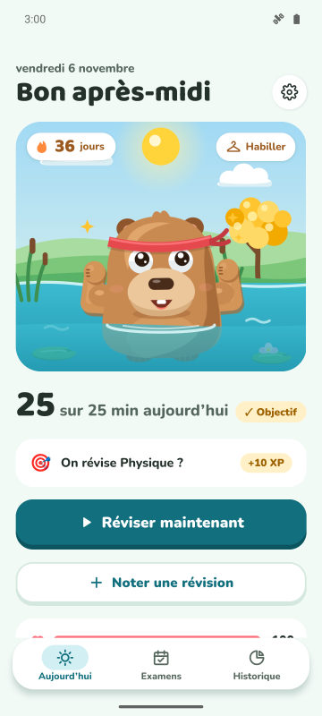
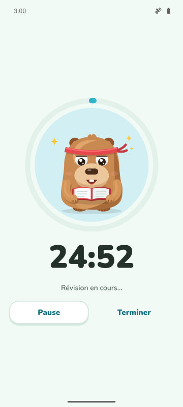
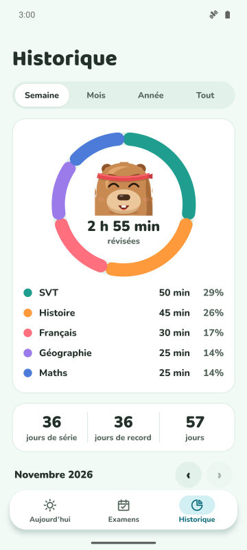
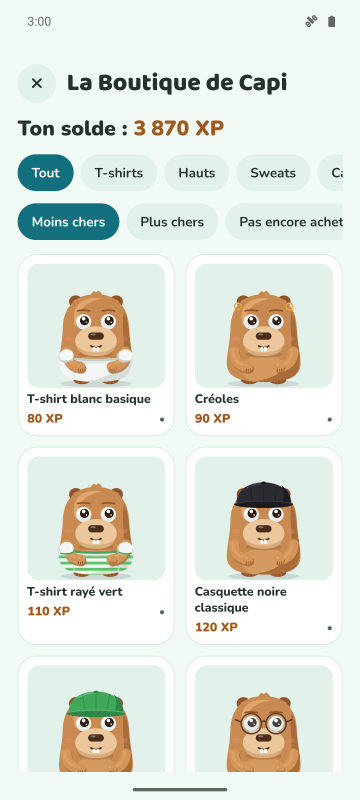

Objectif du jour et série
Choisis combien de minutes réviser par jour. Objectif atteint : ta série grimpe et ton capybara fait la fête.
Minuteur de concentration, série quotidienne et compte à rebours avant les examens. Plus tu révises, plus ton capybara est heureux et fort.
Bientôt sur Google Play
Gratuit sur Android. iPhone plus tard.

Choisis combien de minutes réviser par jour. Objectif atteint : ta série grimpe et ton capybara fait la fête.
Un minuteur avec trois modes. En Mode Protégé, le capybara apparaît par-dessus les applis que tu veux éviter.
Ajoute ton examen et vois les jours restants. Chaque jour, une mission avec la matière qui en a le plus besoin.
Gagne de l'XP en révisant et échange-le contre des tenues et des accessoires. Il fête aussi les jours spéciaux et ton anniversaire.



Oui. L'appli est gratuite avec des pubs. Premium (facultatif) retire les pubs et débloque le Mode Protégé, les notifications coupées pendant la concentration et 3 boucliers de série par mois.
Non. Tes données restent sur ton téléphone. Tu peux les synchroniser avec ton propre Google Drive si tu veux.
Oui. Ajoute la date de l'examen, suis le compte à rebours et reçois des rappels 7, 3 et 1 jour avant.
Dans Forest, tu fais pousser des arbres. Dans CapyFoco, tu t'occupes d'un capybara qui grandit avec tes révisions, avec série quotidienne, objectifs et compte à rebours des examens dans une seule appli.
Android uniquement pour l'instant. Une version iPhone est prévue.